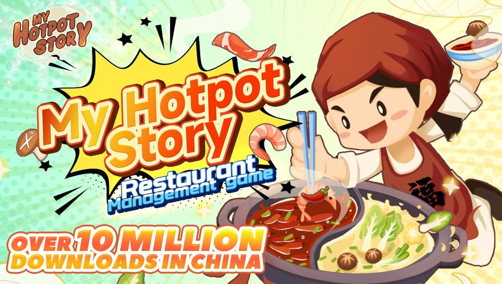

1.Ragnarok X: Next Generation

มาเริ่มต้นกันด้วยเกมมือถือน่าเล่นเกมแรกที่เราจะมาแนะนำกัน นั่นก็คือ Ragnarok X: Next Generation ซึ่งเป็นเกมตระกูล
Ragnarok เกมออนไลน์ระดับตำนานที่ครองใจใครหลายๆ คน โดยเกมนี้จะเป็นเกม MMORPG เก็บเลเวลที่มาพร้อมภาพกราฟฟิกน่ารักสดใส
สวยงาม ที่ยังคงกลิ่นอายของความเป็นเกม Ragnarok อยู่ ในเกมนี้เราก็สามารถเลือกอาชีพได้อย่างอิสระ มีเควส เก็บเลเวล ระบบดันเจี้ยน
ระบบปาร์ตี้ ล่าบอส ค้าขาย ฯลฯ เรียกว่ามาครบ เป็นอีกเกมที่ไม่ควรพลาดเลย
ดาวน์โหลดแอพพลิเคชัน: iOS
ดาวน์โหลดแอพพลิเคชัน: Android
2.My Hotpot Story ร้านหม้อไฟแห่งความสุข

สำหรับเกม My hotpot Story นั้น ออกแบบมาให้เล่นได้ง่าย สามารถเข้าถึงได้ทุกเพศทุกวัย ตัวเกมยังรองรับการใช้งานภาษาไทยด้วย
ทำให้ยิ่งง่ายในการทำความเข้าไป ไม่ว่าจะเป็นเมนู ภารกิจ สูตรอาหาร หรือส่วนผสมต่างๆ นอกจากนี้ก็ยังมีในส่วนของการจ้างพนักงาน คนดูแลร้าน แคชเชียร์
พ่อครัว ฯลฯ อีกทั้งผู้เล่นยังสามารถจัดการต่างอาหารหม้อไฟ ได้หลายส่วนมากๆ ไม่ว่าจะเป็น ภายนอกร้าน ห้องโถง ห้องครัว ห้องจัดแสดง ห้องส่วนตัว
และห้องบุปเฟต์ ใครที่ชอบเกมแนวทำอาหาร ร้านอาหาร เกมนี้ก็เป็นอีกเกมที่ถือว่าน่าสนใจและได้รับความนิยมมากๆ เกมหนึ่งเลย
ดาวน์โหลดแอพพลิเคชัน: iOS
ดาวน์โหลดแอพพลิเคชัน: Android
3. Goose Goose Duck

เกม Goose Goose Duck เป็นเกมมือถือน่าเล่นที่นอกจากจะมีให้เล่นบน PC แล้ว ก็เลยมีการนำมาเปิดให้เล่นบนมือถือกันด้วย
เกมนี้เป็นเกม Co-op แนว Among Us ที่มาพร้อมภาพกราฟฟิกลายเส้น สีสันสดใส โดยในเกมนี้ผู้เล่นจะต้องสวมบทบาทเป็นห่านที่ต้องร่วมมือกันกับผู้เล่นอื่นในทีม
ในการสืบหาว่าใครที่เป็นเป็ดซึ่งแอบลอบฆ่าเพื่อนๆ คนอื่นในทีม โดยผู้ที่ได้รับบทเป็นเป็ดก็ต้องคอยลอบสังหารผู้เล่นอื่นโดยไม่ให้ถูกจับได้
ในเกมนี้ตัวละครห่านแต่ละตัวก็จะมีความสามารถที่แตกต่างกันออกไป
ดาวน์โหลดแอพพลิเคชัน: iOS
ดาวน์โหลดแอพพลิเคชัน: Android
4. Genshin Impact

Genshin Impact เป็นเกมมือถือน่าเล่น ที่มีภาพกราฟฟิกแนวญี่ปุ่นที่สวยงาม สีสันสดใส ทั้งยังมาพร้อมกับระบบภายในเกมที่น่าสนใจและหลากหลายเป็นอย่างมาก
โดยผู้เล่นจะต้องผจญภัยในโลกแห่งจินตนาการ ซึ่งต้องผจญภัยไปตามสถานที่ต่างๆ ในโลก Open World เพื่อทำภารกิจเนื้อเรื่อง นอกจากนี้ในส่วนของตัวละครนั้น
เราก็สามารถที่จะเลือกใช้ได้อย่างอิสระ ขึ้นอยู่กับทักษะ สกิล ธาตุ ที่เหมาะสมกับพื้นที่หรือกับมอนสเตอร์ที่เราต้องต่อสู้ นอกจากนี้เกมยังมีระบบการผสมพลังธาตุ,
กาชาปอง, ระบบเควส, การเล่นร่วมกับผู้เล่นอื่น ฯลฯ Genshin Impact จึงถือเป็นอีกหนึ่งเกมที่น่าเล่นมากๆ เกมหนึ่งเลย
ดาวน์โหลดแอพพลิเคชัน: iOS
ดาวน์โหลดแอพพลิเคชัน: Android